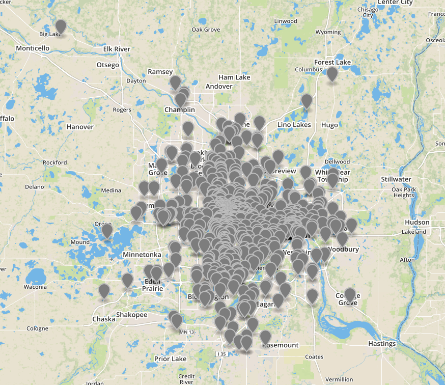

Metro Transit CLI Bus Locations
Continuing with the mtcli package, I added busloc.py which will display the locations of vehicles on a specified route. There are two main functions, getLocations(busNum) and openMap(busLocations).
First the user is prompted for a bus number. A call is made to the metro transit API to return an array of arrays of information about all the vehicles currently active on that route. Two of the attributes of interest are the latitude and longitude. I build a GeoJSON MultiPoint array of the GPS coordinates of each vehicle. More info on the GeoJSON format can be foud here.
I was recommended to a great resource in GeoJSON.io to display the locations on map in a browser. You can upload data in many forms to geojson.io or point it to an online datasets. Since I wanted a fluid experience with my application I chose to encode the coordinate data into the URL used to request the site. I used the urllib.parse.quote module to replace special characters in the coordinate data using %xx escape format. Finally webbrowser.open_new_tab(url) is called to open geojson.org with the location data.
Metro Transit allows you to specity "0" as a route number and it will return data on all vehicles currently in operation.
I am thinking about ways to combine mtcli.py and busloc.py into a single application.
All Metro Transit vehicles in operation at 16:00 on a Tuesday
